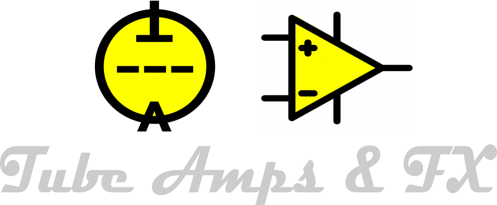

📂 Tube Amps
🎛 Pedais
- Matador de Ruidos (Fonte pedais limpinha)
- Banana Booster (Booster Valvulado)
- Valvodrive
- Sabbra Cadabra (timbre Black Sabbath)
- The Mover (Drive JFET)
🔩 Componentes
- Tabela de válvulas
- Transformadores de saída
- Alto-falantes DIY
📚 Tutoriais e Curso
- Curso de Montagem de Amps Valvulados
- Como Consertar seu Amplificador Valvulado Tube Amp
- Válvulas em 12V ou menos
📖 História e Cultura
- História dos amplificadores valvulados
- Estilos de timbre (British, American)
🛒 Lojas e Serviços
- Onde comprar componentes
- Serviços recomendados
🌎 Antigos tubeamps.com.br